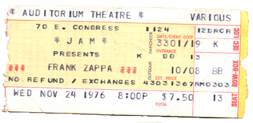

Заппа'zУх!Ой!
русский более или менее регулярный бюллетень для поклонников американского композитора
Frank'а Vincent'а Zappa'ы
Выпуск.47 (04 Декабря 2003)
5 + 5
Пять лет назад мы впервые вспомнили эти невеселую дату. Отметили в нашей Заппа-Зу-Хе.
Четвертое декабря.
Автобус сделал остановку. И маэстро вышел. Один. В Ночь.

А мы остались. Без него поехали. Да. Так бывает.
Когда-нибудь нас тоже пригласят на выход. Естественно. Но мы билеты сохраним. Конечно. Как и положено. До самого конца проезда.
Не сомневаюсь.
Искренне Ваш, Владимир Советов
http://www.arf.ru/
| Домой | Заппа'zУх!Ой! | Поиск | Хозяин |